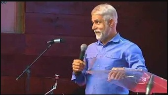
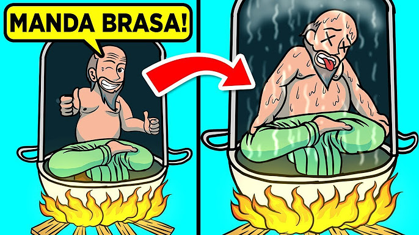
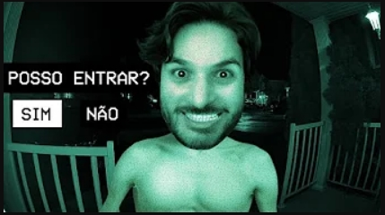
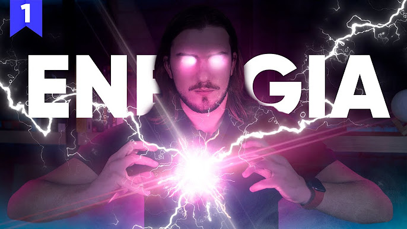

Welcome to the SAX Youtube Channel!
Você já ouviu as boas novas?
Olá, seja muito bem-vindo ao canal Vida de Fé!
Jesuscopy é um movimento que ensina como ser cópias de Jesus
Minha missão é ajudar as pessoas.
Neste canal atendemos os pedidos da comunidade.
Aprenda a Ganhar Dinheiro Investindo.
A Fatos Desconhecidos começou no ano de 2010.
Vídeos de animação explicando as coisas com niilismo otimista
Vídeos surpreendentemente interessantes
Jogo uns jogos e passo vergonha.
Mantendo seu cérebro sempre ativo!